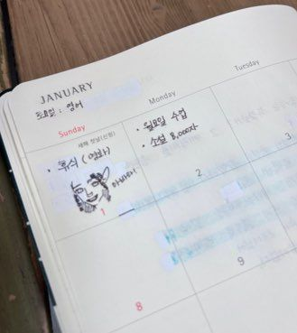

방구석게임중독님
방구석게임중독님 
아바타 재밌는데 후반부에 계속 세월호 떠오르더라 다 보고 나와서 구글링하니까 그런 사람 많더라. 트라우마 있는 사람은 보다가 기절할 정도라고 생각했음. 세월호 뉴스 첨 탈 때 급식실에서 급식 먹으면서 몰폰하던 중딩이었는데 어느새 대학교를 졸업하게 되었네요 시간이 참.
아바타2 전체적으로 재밌고 짜증나는 부분도 많지만 주인공네 자식들이 귀여워서 좋았음. 영상미도 좋았고 다들 내용은 노잼이라는데 난 내용도 좋았음. 투다다다다 다 때려부수는 거 특히 좋았음.
아바타2로 끝날줄 알았는데 극장 나오면서 큰언니가 말하길 5까지 있다더라. 1초에 2억원을 태우더니 몇조를 더 태우려고 ㄷㄷ
아무튼 다음엔 가족들 떼어놓고 홀로 3D로 보러갈까 생각 중. 이번엔 연로하신 부모님 때문에 리클라이너관에서 봄. 편해서 잘 봤음. 참 재미써따 끝
후원댓글 8개
댓글 8개 ▼